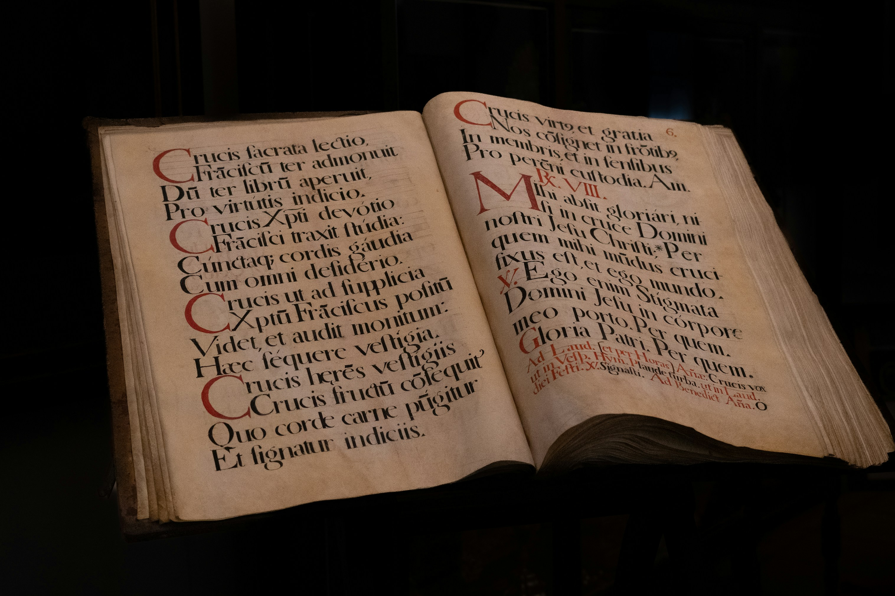
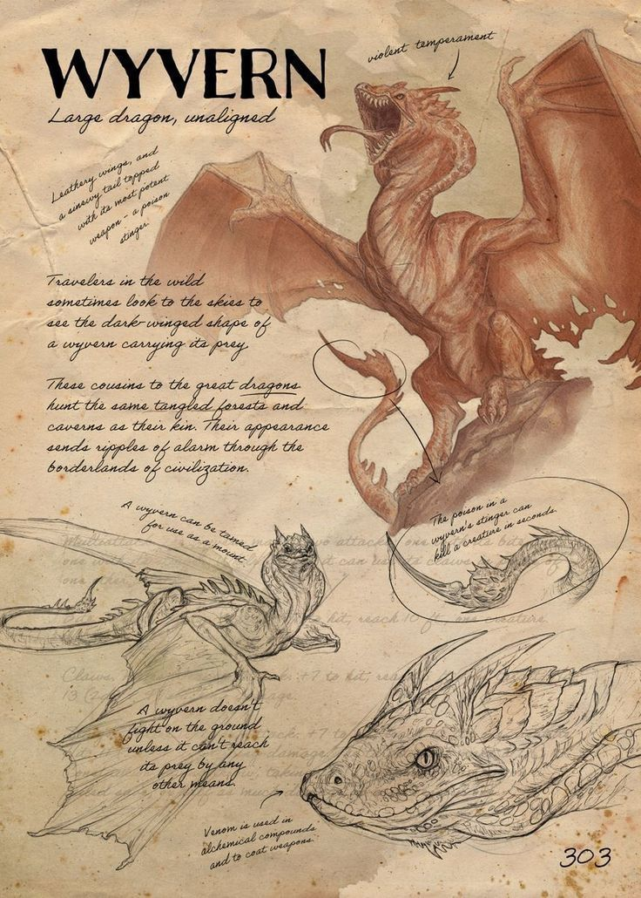
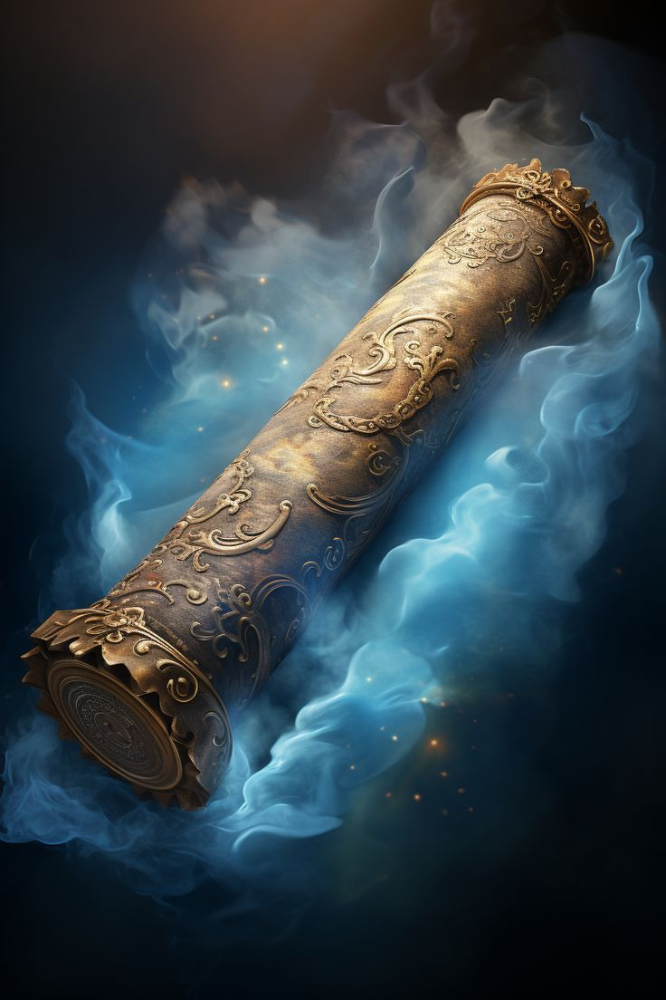
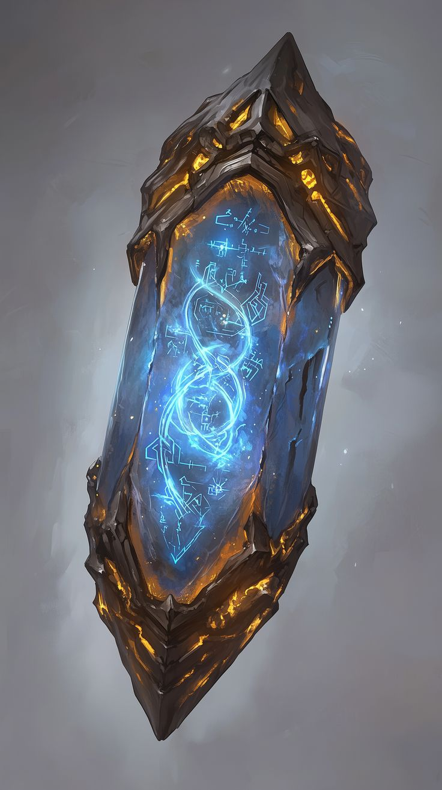

AstraVault safeguards the lost knowledge of forgotten civilizations—from forbidden spellcraft and celestial relics to creatures erased from history. Every page unlocks another legend.

Preserve the rise and fall of lost kingdoms, vanished empires, and civilizations erased from memory.

Study dragons, leviathans, phoenixes, and creatures whose existence survives only through ancient records.

Unlock forbidden spellcraft, enchanted manuscripts, and magical disciplines hidden for centuries.

Discover legendary artifacts infused with ancient power and forged beneath forgotten constellations.
"Within these halls lie the voices of civilizations long vanished. Listen closely, and even the silence has a story to tell.
Step beyond the ordinary and uncover secrets preserved for centuries within the endless halls of AstraVault.